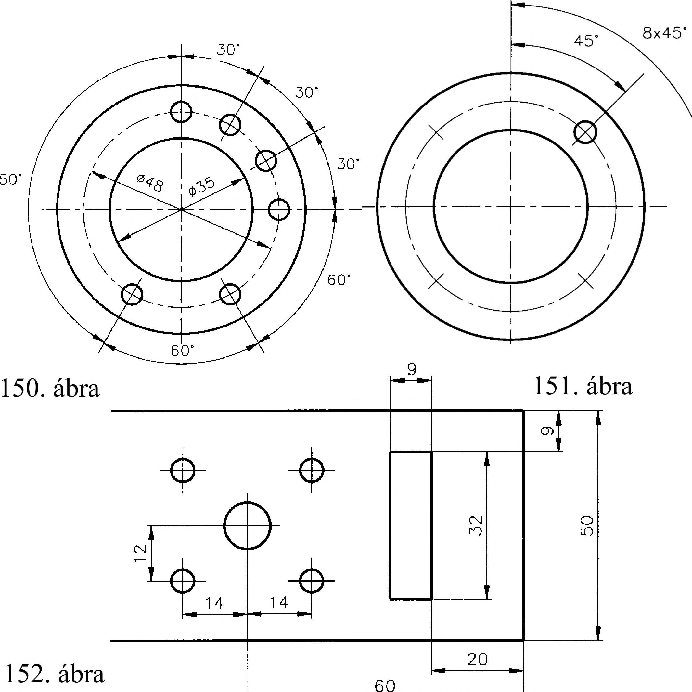

8. Mérethálózat 8. Mérethálózat 8.1. Különleges méretmegadások és egyszerűsítések Osztókörön megengedett a zárt méretlánc (150. ábra). Az egyenlő osztás megadható az osztókor átmérőjével, az osztás méretével és az osztókörön elhelyezkedő furatok számával (151. ábra). Furatok helyzetének megadásakor figyelembe kell venni a furatok gyártási módját és egymáshoz való helyzetüket is (fúrás, lyukasztás). Megfelelően körülhatárolt területen a furatok helyzete bázisvonaltól is megadható (152. ábra). Esztergált alkatrész méretmegadása az esztergálás műveleti sorrendjét követi. A homlokfelülettől (bázistól) kiindulva kell az összes hosszúsági méretet megadni. Két végéről esztergált alkatrész méretezési bázisfelülete a munkadarab két végének homlokfelülete, innen adjuk meg a hosszúsági méreteket, a legnagyobb átmérőhöz tartozó hosszméret kiadódó méret lesz (153. ábra). Az átmérők méretei a középvonalra szimmetrikusan felváltva hol jobb, hol bal oldalra írhatók. 154. ábra 155. ábra 153. ábra 156. ábra 157. ábra 3x45" Az esztergált alkatrészeken a normál méretezéstől eltérően azt a hornyot, amely egy adott átmérőhöz tartozik, csak a szélességével és átmérőjével kell megadni. Amennyiben a horony hengeres felülethez csatlakozik, akkor a működés szerint is méretezni kell (154. ábra). Hengeres munkadarab legömbölyített végét sugár megadásával kell méretezni. A munkadarab hosszát a legömbölyítéssel együtt kell megadni (155. ábra). Kúpos munkadarabok méretezésekor a kúpszöget elegendő hely esetén közvetlenül a kúpon kell megadni. Ha a kisebb alkatrészátmérő ezt nem teszi lehetővé, akkor a kúpon kívül méretsegédvonalakkal lehet megadni (156. ábra ). Hengeres munkadarabok végének éltompítását az élletörés szögével és hosszával kell megadni. Csak 45°-os élletörés esetén lehet egyszerűsített méretmegadást alkalmazni (157. ábra). Szabálytalan kontúrvonalú alkatrészek méretei az egyes pontok koordináta méreteinek megadásával határozhatók meg (158. és 159. ábra). 41
